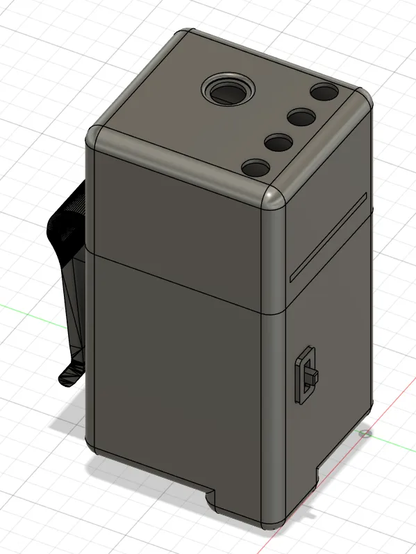
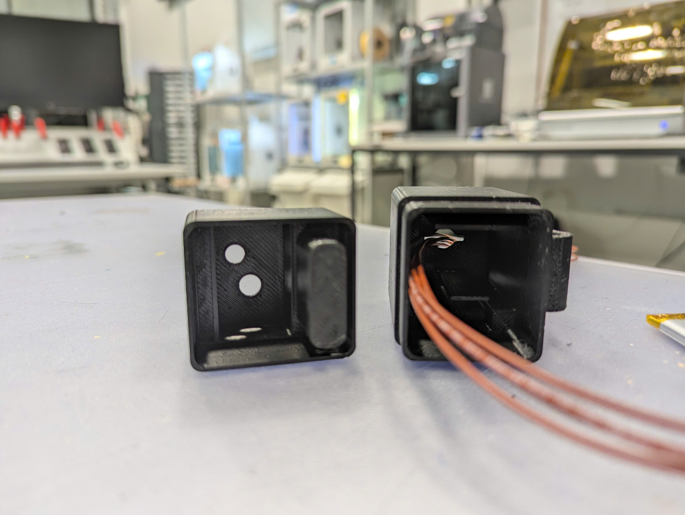
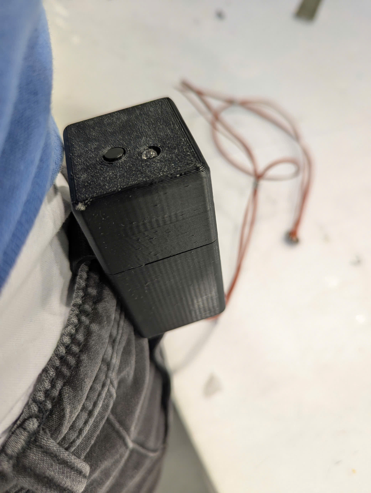
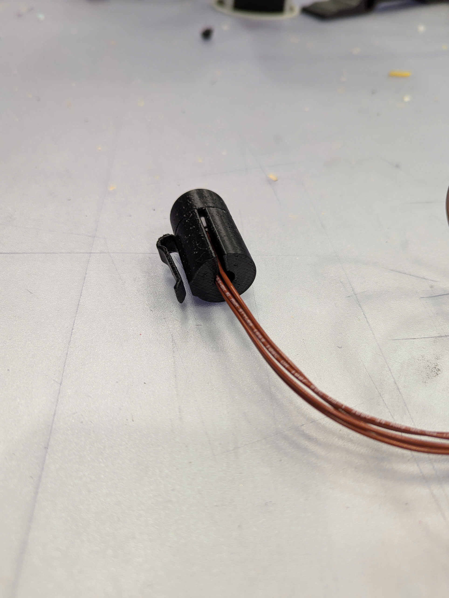

Overview
TuneScriber was a group project centred around a wearable audio recording device. The idea was to have the device continuously retain a short window of audio, so the user could save something relevant after it had happened rather than having to start recording beforehand.
My main responsibility was the mechanical design and physical integration. I worked on the enclosure, its smaller components, and how everything would fit together into something compact enough to wear.
Most of my work involved CAD and rapid prototyping, but I also helped with soldering, assembly, and getting the hardware together.
Designing the Enclosure

I designed the enclosure and mechanical components in Fusion 360. This included the housing, button mechanisms, attachment points, and the space needed for the internal electronics.
The tricky part was that the electronics were still evolving while I was working on the enclosure. Component positions and dimensions changed along the way, which meant going back to the CAD model and adjusting things more than once.
I also had to think about how the device would actually be used. It was not enough for everything to fit inside the enclosure; the buttons needed to be accessible, the components needed to stay in place, and the whole thing had to be practical to wear.
Prototyping and Assembly

Once the design was ready to test, I used 3D printing to make physical prototypes. Having the parts in hand made it much easier to spot problems with clearances, fit, and button placement that were not always obvious in CAD. Furthermore, I learned a lot about how to model specifically for 3D printing, since there were limitations on things like angles, wall thickness, and orientation. There were times I had to spend half an hour removing support because I made some less-than-optimal choices in designing and slicing the model.
From there, it was a matter of assembling the parts, checking what worked, and making adjustments where needed. I also helped with soldering and integrating the electronics into the enclosure.


What I Took Away
The biggest lesson was how closely mechanical design and electronics depend on each other. A small change to the hardware could mean reworking part of the enclosure, and something that looked fine in CAD could turn out to be awkward once printed and assembled.
The project involved quite a bit of going back and forth: modelling, printing, checking the fit, and changing things. Sometimes the quickest way to solve a design problem is simply to print a prototype and see if it works.
Results
- Designed the enclosure and mechanical components for a wearable audio device.
- Created and iterated CAD models in Fusion 360.
- Produced physical prototypes using 3D printing.
- Worked on fit, component placement, button mechanisms, and microphone housing.
- Helped with soldering, assembly, and hardware integration.
Technologies and Tools
Fusion 360 · CAD · 3D Modelling · 3D Printing · Rapid Prototyping · Enclosure Design · Soldering · Hardware Assembly